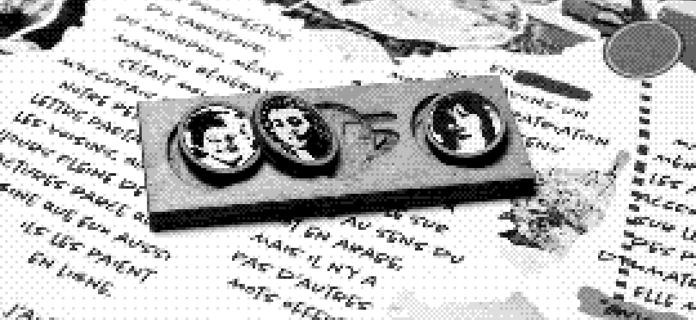
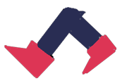
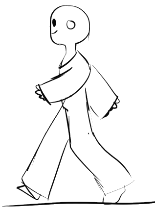
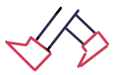
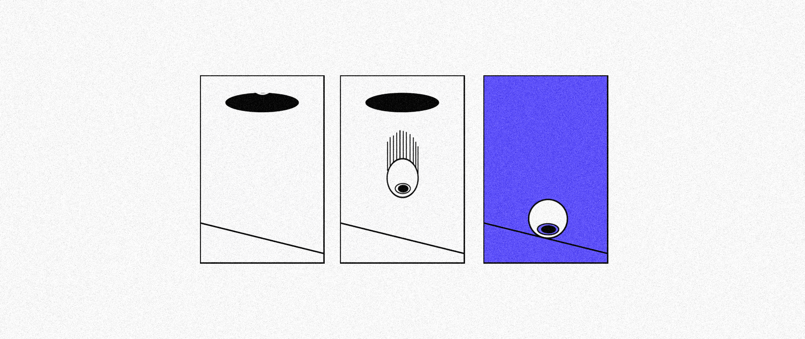
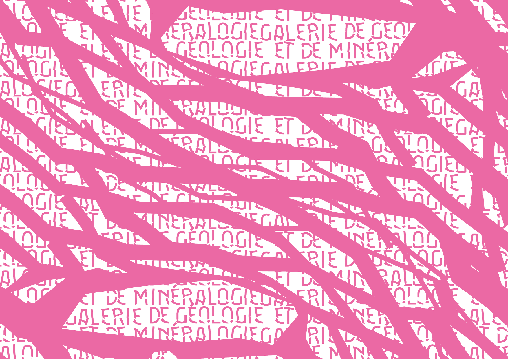
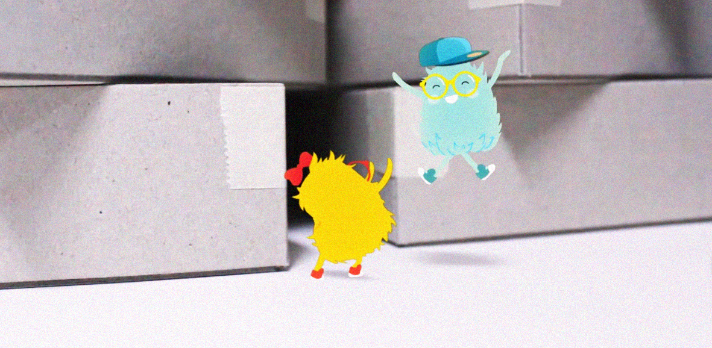
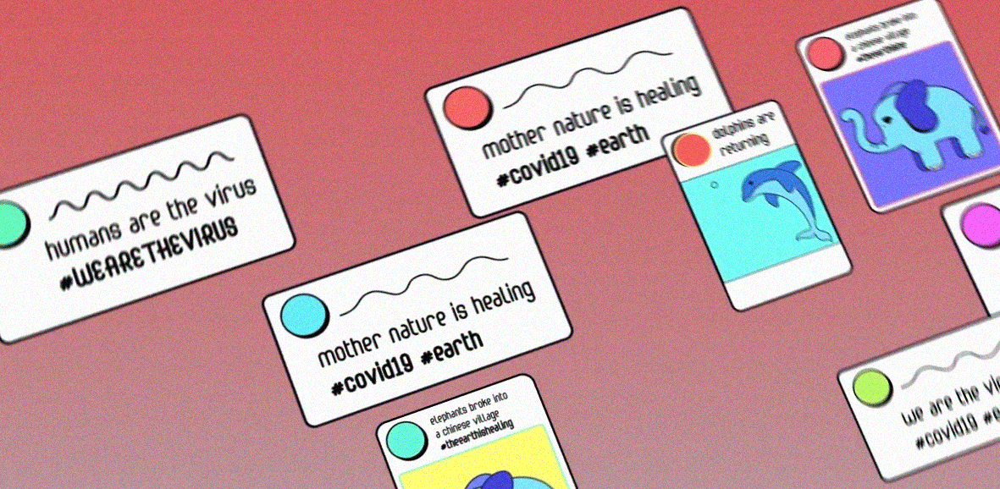
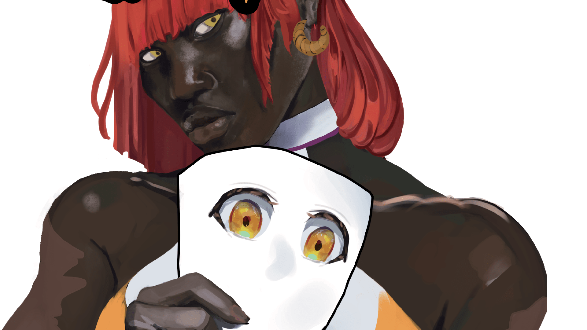
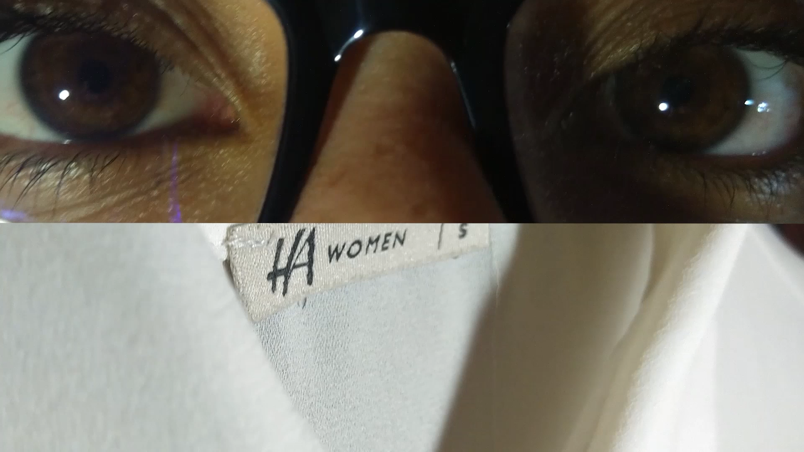

À propos




Salut! Je suis actuellement à la recherche d'un stage d'intégration pendant 3 mois à partir du mi-avril! Je vous invite à jeter un coup d'oeil sur mes travaux :)
Psst... Les petites animations roughs sont draggables

Grille Intéractive

Identité visuelle de la GGM

Spot promotionnelle pour Lisatoys

Who is the virus?

Costumes

Dernière mode